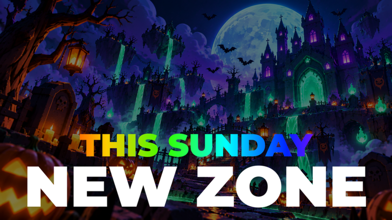
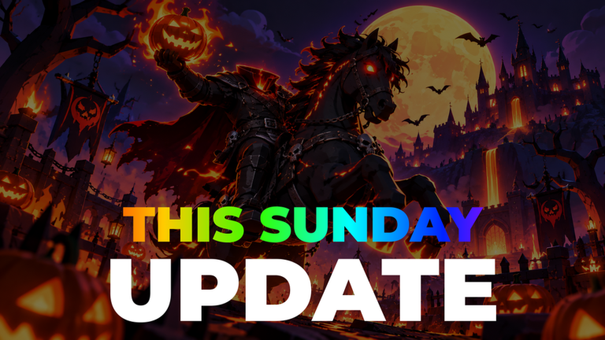

JocBreak and Steal an Egg
5 postări · cele mai noi primele · vezi în blog cu filtre
 CONFIRMAT27 octombrie 2026Break and Steal an Egg
CONFIRMAT27 octombrie 2026Break and Steal an EggBreak and Steal an Egg: ADMIN ABUSE joi, 29 oct, la 17:00, și Update + Admin Abuse duminică, 1 nov, la 17:00
🥚 Break and Steal an Egg (alt joc decât Steal An Egg) are două evenimente oficiale noi. Le publică ILGames x Eggs, grupul care face jocul.…
CONFIRMAT22 octombrie 2026Break and Steal an EggBreak and Steal an Egg: eveniment „???” duminică, 25 oct, la 15:00
Break and Steal an Egg are un eveniment cu numele „???”: de duminică, 25 octombrie, 15:00, până luni, 26 octombrie, 15:00 (ora României).… TREND SHORTS20 octombrie 2026Break and Steal an Egg
TREND SHORTS20 octombrie 2026Break and Steal an EggBreak and Steal an Egg în viața reală
Muscle Nugget are ~42K vizualizări (citite pe 18 oct) cu un short de 22 de secunde: un copil sparge „ouă” pe stradă, iar peste imagine e… CONFIRMAT20 octombrie 2026Break and Steal an Egg
CONFIRMAT20 octombrie 2026Break and Steal an EggBreak and Steal an Egg a atins ~1,3 milioane de jucători simultan, pentru câteva ore
Break and Steal an Egg a avut un vârf uriaș duminică, 18 octombrie, în timpul Admin Abuse-ului. 🥚👻 Atenție: e un vârf temporar, de câteva…
CONFIRMAT17 octombrie 2026Break and Steal an EggBreak and Steal an Egg: Halloween + Admin Abuse duminică
Break and Steal an Egg are Halloween + Admin Abuse de duminică, 18 octombrie, 15:00, până luni, 19 octombrie, 15:00 (ora României).…